<title>Brace-contact discovery</title>
<link rel="stylesheet" href="https://fonts.googleapis.com/css2?family=IBM+Plex+Sans:wght@400;500;600&family=IBM+Plex+Mono:wght@400;500&display=swap">

<style>
:root{--bg:#f7f6f2;--ink:#1e1e1c;--muted:#5f5d57;--rule:#dcd9d0;--accent:#c8102e;--card:#ffffff;--code:#efece4;}
@media (prefers-color-scheme: dark){:root:not([data-theme="light"]){--bg:#16171a;--ink:#ecebe6;--muted:#a3a19a;--rule:#33353a;--accent:#ff5c6e;--card:#1e2024;--code:#26282d;}}
:root[data-theme="dark"]{--bg:#16171a;--ink:#ecebe6;--muted:#a3a19a;--rule:#33353a;--accent:#ff5c6e;--card:#1e2024;--code:#26282d;}
body{background:var(--bg);color:var(--ink);font-family:"IBM Plex Sans",system-ui,sans-serif;font-size:16px;line-height:1.5;margin:0;padding:0 20px;padding-block:24px 64px;}
main{max-width:1480px;margin:0 auto;}
h1{font-size:1.7rem;font-weight:600;line-height:1.2;margin:0 0 6px;text-wrap:balance;}
h2{font-size:1.25rem;font-weight:600;margin:48px 0 6px;padding-top:18px;border-top:1px solid var(--rule);text-wrap:balance;}
h3{font-size:1.05rem;font-weight:600;margin:28px 0 4px;}
p{max-width:78ch;margin:6px 0;}
ul{max-width:78ch;padding-left:1.2em;} li{margin:4px 0;}
.lede{color:var(--muted);}
code,.path{font-family:"IBM Plex Mono",ui-monospace,monospace;font-size:0.86em;}
code{background:var(--code);padding:1px 5px;border-radius:3px;}
table{border-collapse:collapse;margin:14px 0 10px;font-size:0.93rem;}
th,td{text-align:left;padding:6px 14px 6px 0;border-bottom:1px solid var(--rule);vertical-align:top;}
th{font-weight:500;color:var(--muted);}
td.num{font-variant-numeric:tabular-nums;font-family:"IBM Plex Mono",ui-monospace,monospace;font-size:0.9em;white-space:nowrap;}
.wrap{overflow-x:auto;}
nav{display:flex;flex-wrap:wrap;gap:6px 18px;margin:14px 0 0;font-size:0.93rem;}
nav a{color:var(--accent);text-decoration:none;}
nav a:hover,nav a:focus{text-decoration:underline;}
figure{margin:22px 0 0;display:flex;flex-direction:column;gap:8px;}
figcaption{max-width:90ch;font-size:0.95rem;}
.eyebrow{display:inline-block;font-family:"IBM Plex Mono",ui-monospace,monospace;font-size:0.78em;letter-spacing:0.04em;text-transform:uppercase;color:var(--accent);margin-right:10px;}
.path{display:block;color:var(--muted);margin-top:2px;}
figure img{max-width:100%;height:auto;display:block;background:var(--card);border:1px solid var(--rule);}
a:focus-visible{outline:2px solid var(--accent);outline-offset:2px;}
</style>
<main>
<h1>Brace-contact discovery inside one CEM iteration: the forearm pad landing, rollout by rollout</h1>
<p class="lede">Talk assets, 2026-09-21. Same method as <code>20260921-alg1_filmstrips.html</code>, at the moment that matters: the plan tick at which some of the 20 sampled rollouts
land the forearm pad on the slab and others do not, with the deployed planner settings (CEM, std_min 0.01 rad, k = 6, 33 plans/s, deploy gains, strategy 25).
Ticks were found by dumping every 0.25 s from 19 to 29 s in four runs (<code>run_contact_dumps.sh</code>) and scoring each dump with <code>contact_stats.py</code>:
for every rollout, the gap between the lowest point of <code>left_forearm_pad</code> and the table face along the horizon, landed = within 3 mm.
Full-resolution PNG and PDF: <code>mujoco_mpc/studies/alg1_filmstrips/figs/&lt;run&gt;/</code>, <code>clean/</code> for slides; method and commands in <code>studies/alg1_filmstrips/README.md</code>.</p>
<nav>
<a href="#s10">seed 10, t = 24.27 s: four find it</a>
<a href="#s9">seed 9, t = 24.51 s: the fold lands it</a>
<a href="#extra">seed 1 at the transition; std_min 0.02 finds it early</a>
</nav>

<div class="wrap"><table>
<tr><th>run</th><th>tick</th><th>pad gap at x₀</th><th>landers / 20</th><th>elite landers / 6</th><th>θ̄</th><th>fold</th><th>J(θ̄)</th><th>samples best / worst</th><th>J fold</th><th>plant first loads the pad</th></tr>
<tr><td><code>cem_stdmin01_s10_dense</code></td><td class="num">24.27 s</td><td class="num">+28 mm</td><td class="num">4</td><td class="num">3</td><td>hovers, +17 mm at h = 1</td><td>hovers, +6 mm</td><td class="num">1603.3</td><td class="num">1540.2 / 1707.1</td><td class="num">1603.2</td><td class="num">24.9 s (122 N peak)</td></tr>
<tr><td><code>cem_stdmin01_s10_dense</code></td><td class="num">24.51 s</td><td class="num">+26 mm</td><td class="num">20</td><td class="num">6</td><td>lands at h = 0.48 s</td><td>lands at h = 0.46 s</td><td class="num">980.8</td><td class="num">878.9 / 3349.0</td><td class="num">892.0</td><td class="num">24.9 s</td></tr>
<tr><td><code>cem_stdmin01_s9_dense</code></td><td class="num">24.51 s</td><td class="num">+15 mm</td><td class="num">9</td><td class="num">5</td><td>hovers, +3 mm at h = 1</td><td>lands at h = 0.61 s</td><td class="num">1222.1</td><td class="num">1100.8 / 1300.6</td><td class="num">1168.2</td><td class="num">24.88 s (119 N peak)</td></tr>
<tr><td><code>cem_stdmin01_s1_dense</code></td><td class="num">24.00 s</td><td class="num">+26 mm</td><td class="num">19</td><td class="num">6</td><td>lands at h = 0.86 s</td><td>lands at h = 0.79 s</td><td class="num">1139.9</td><td class="num">983.1 / 1247.1</td><td class="num">1036.7</td><td class="num">24.52 s (111 N peak)</td></tr>
<tr><td><code>cem_stdmin02_s0_dense</code> (std_min 0.02)</td><td class="num">23.01 s</td><td class="num">+43 mm</td><td class="num">20</td><td class="num">6</td><td>lands at h = 0.58 s</td><td>lands at h = 0.60 s</td><td class="num">530.3</td><td class="num">549.2 / 776.8</td><td class="num">554.2</td><td class="num">23.64 s (139 N peak)</td></tr>
</table></div>
<p>In every deployed-setting run the pad is held 23–43 mm above the slab through rung 1 with 0 of 20 rollouts landing it; the landing appears in the rollouts within one or two plan ticks of the rung-2 transition at 24.0 s
(rung 2 lowers the brace target: <code>target_distance_tolerance</code> 0.07 m, <code>target_ramp_sec</code> 3 s), and the plant loads the pad 0.4–0.9 s after that. The std_min 0.02 run found the contact inside rung 1, 1.5 s before the schedule asked for it.</p>
<h2 id="s10">Seed 10, t = 24.27 s: four rollouts land the pad, and they are the three best</h2><p>Pad at +28 mm. The three lowest-J candidates (k = 14, 4, 11; J 1540–1576) are exactly three of the four that land the pad inside the horizon; every hoverer scores 1603–1606,
and the fourth lander (k = 12) is the worst at 1707. θ̄ rises and then descends to +17 mm; the elite mean of three landers and three hoverers descends to +6 mm, halfway.
Rollout spread at h = 1 s: pelvis 23 / 62 mm, hands 30 / 64. One tick later (24.51 s, below) all 20 land by h ≈ 0.5 s; the plant loads the pad at 24.9 s.</p>

<figure>
  <figcaption><span class="eyebrow">lines 5–8</span><strong>the brace contact inside the rollouts</strong> Detail camera on the forearm pad at h = 1 s with pad and right-hand traces; pad clearance to the table face along every rollout (grey band = landed); J(k) bars with landers solid and hoverers hatched, elites shaded. 
  <span class="path">figs/cem_stdmin01_s10_dense/t24.27_G1_contact.png · clean/</span></figcaption>
  <a href="media/alg1_filmstrips/cem_stdmin01_s10_dense__t24.27_G1_contact.jpg" target="_blank" rel="noopener">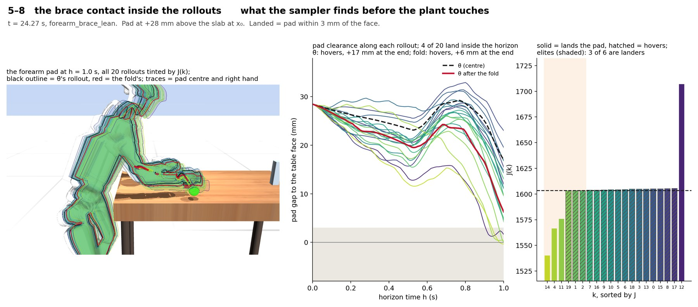</a>
</figure>

<figure>
  <figcaption><span class="eyebrow">line 5</span><strong>the pad landing along the horizon</strong> Detail camera, all 20 rollouts at h = 0.25, 0.5, 0.75, 1.0 s; the frame title counts how many have the pad down by then. 
  <span class="path">figs/cem_stdmin01_s10_dense/t24.27_G2_contact_strip.png · clean/</span></figcaption>
  <a href="media/alg1_filmstrips/cem_stdmin01_s10_dense__t24.27_G2_contact_strip.jpg" target="_blank" rel="noopener">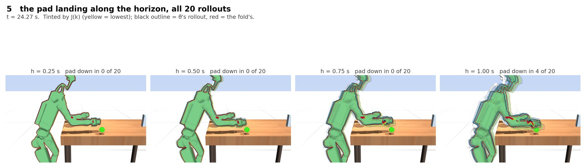</a>
</figure>

<figure>
  <figcaption><span class="eyebrow">line 1</span><strong>θ̄ ← Center(θ)</strong> Six frames of θ̄&#x27;s rollout over the 1 s horizon (faint grey = x₀), its running cost, and the spline θ̄ itself for eight joints. 
  <span class="path">figs/cem_stdmin01_s10_dense/t24.27_A_center.png · clean/</span></figcaption>
  <a href="media/alg1_filmstrips/cem_stdmin01_s10_dense__t24.27_A_center.jpg" target="_blank" rel="noopener">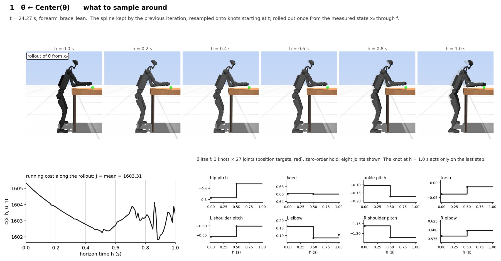</a>
</figure>

<figure>
  <figcaption><span class="eyebrow">lines 3–4</span><strong>ε(k) ~ N(0, Σ), θ(k) ← θ̄ + ε(k)</strong> Σ as a 3 knots × 27 joints heatmap of the std sampled at this tick (refit elite std, floored at std_min), and the 20 perturbed splines around θ̄. 
  <span class="path">figs/cem_stdmin01_s10_dense/t24.27_B_spread.png · clean/</span></figcaption>
  <a href="media/alg1_filmstrips/cem_stdmin01_s10_dense__t24.27_B_spread.jpg" target="_blank" rel="noopener">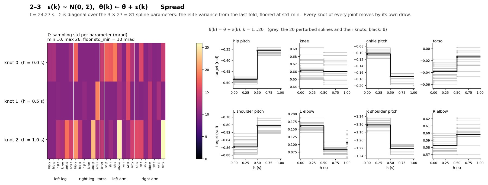</a>
</figure>

<figure>
  <figcaption><span class="eyebrow">line 5</span><strong>roll out f from x₀, all 20 at once</strong> The fan as a filmstrip: every rollout at h = 0.25, 0.5, 0.75, 1.0 s, tinted by J(k) (yellow = lowest); black = θ̄&#x27;s rollout; traces = hands and pelvis. 
  <span class="path">figs/cem_stdmin01_s10_dense/t24.27_C3_fan_strip.png · clean/</span></figcaption>
  <a href="media/alg1_filmstrips/cem_stdmin01_s10_dense__t24.27_C3_fan_strip.jpg" target="_blank" rel="noopener">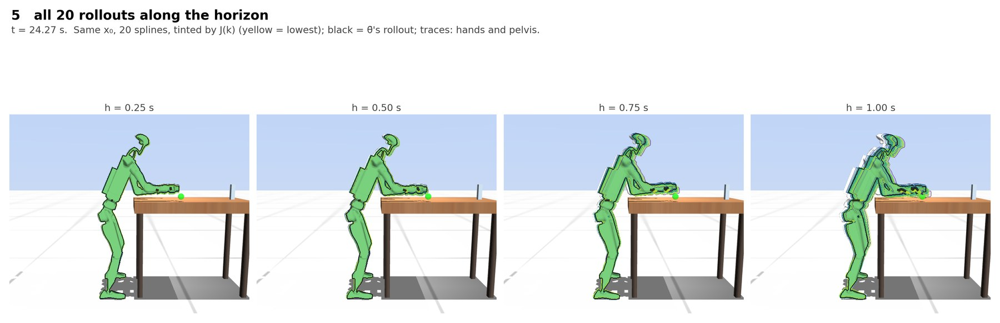</a>
</figure>

<figure>
  <figcaption><span class="eyebrow">lines 5–6</span><strong>J(k) ← mean cost</strong> All 20 end states on one image next to the sorted J(k) bars. 
  <span class="path">figs/cem_stdmin01_s10_dense/t24.27_C1_rollouts_fan.png · clean/</span></figcaption>
  <a href="media/alg1_filmstrips/cem_stdmin01_s10_dense__t24.27_C1_rollouts_fan.jpg" target="_blank" rel="noopener">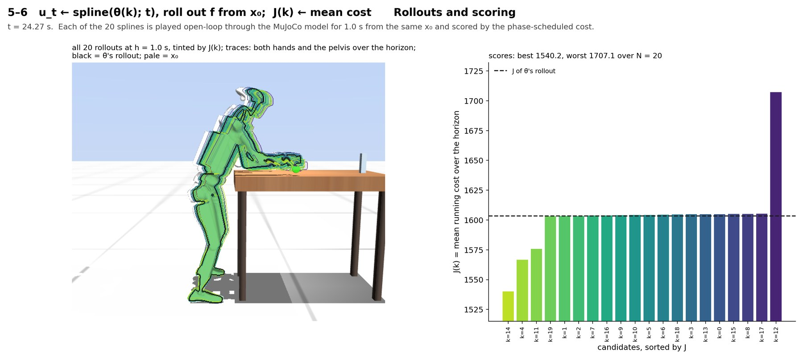</a>
</figure>

<figure>
  <figcaption><span class="eyebrow">lines 5–6</span><strong>four rollouts, frame by frame</strong> Best, two mid-ranked and worst candidate as filmstrips with their running cost against θ̄&#x27;s. 
  <span class="path">figs/cem_stdmin01_s10_dense/t24.27_C2_rollouts_strips.png · clean/</span></figcaption>
  <a href="media/alg1_filmstrips/cem_stdmin01_s10_dense__t24.27_C2_rollouts_strips.jpg" target="_blank" rel="noopener">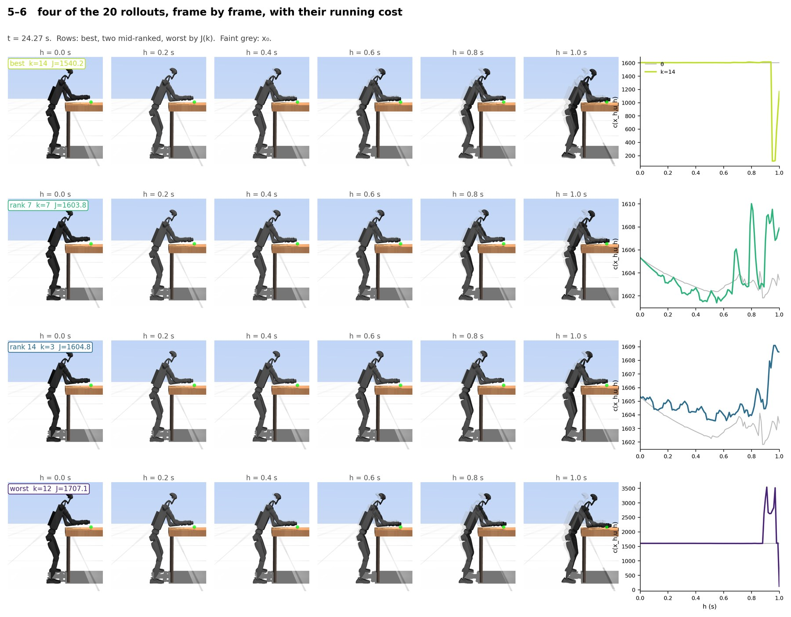</a>
</figure>

<figure>
  <figcaption><span class="eyebrow">line 8</span><strong>θ ← Fold({θ(k)}, {J(k)})</strong> The 6 elites in the J bars, the elite fan with the rollout of their mean (red outline), and the elite splines → mean for eight joints. 
  <span class="path">figs/cem_stdmin01_s10_dense/t24.27_D_fold.png · clean/</span></figcaption>
  <a href="media/alg1_filmstrips/cem_stdmin01_s10_dense__t24.27_D_fold.jpg" target="_blank" rel="noopener">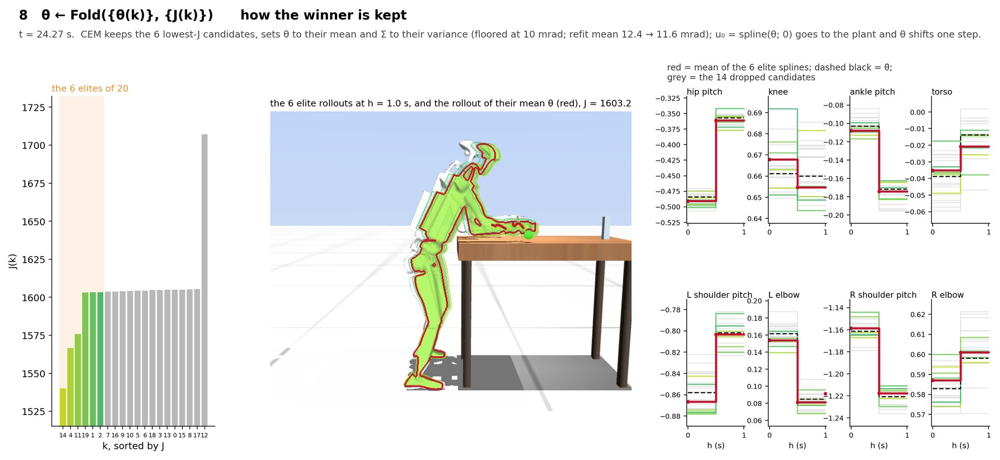</a>
</figure>

<figure>
  <figcaption><span class="eyebrow">line 8</span><strong>θ̄&#x27;s rollout over θ&#x27;s rollout</strong> Both from the same x₀; the difference is one iteration. 
  <span class="path">figs/cem_stdmin01_s10_dense/t24.27_D2_fold_strips.png · clean/</span></figcaption>
  <a href="media/alg1_filmstrips/cem_stdmin01_s10_dense__t24.27_D2_fold_strips.jpg" target="_blank" rel="noopener">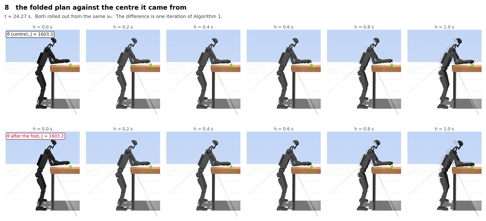</a>
</figure>

<figure>
  <figcaption><span class="eyebrow">all</span><strong>the four stages on one panel</strong> Centre, spread, fan, fold. 
  <span class="path">figs/cem_stdmin01_s10_dense/t24.27_E_overview.png · clean/</span></figcaption>
  <a href="media/alg1_filmstrips/cem_stdmin01_s10_dense__t24.27_E_overview.jpg" target="_blank" rel="noopener">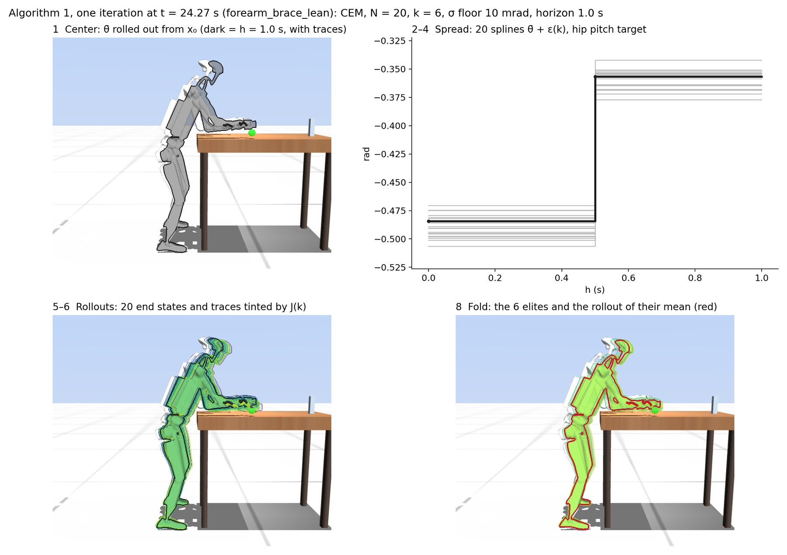</a>
</figure>

<figure>
  <figcaption><span class="eyebrow">lines 5–8</span><strong>the brace contact inside the rollouts</strong> Detail camera on the forearm pad at h = 1 s with pad and right-hand traces; pad clearance to the table face along every rollout (grey band = landed); J(k) bars with landers solid and hoverers hatched, elites shaded. The next dumped tick, 24.51 s: 20 of 20 land, θ̄ at h = 0.48 s, the fold at 0.46 s; J 878.9–3349.0 (the 3349 is a rollout that lands and then loses balance).
  <span class="path">figs/cem_stdmin01_s10_dense/t24.51_G1_contact.png · clean/</span></figcaption>
  <a href="media/alg1_filmstrips/cem_stdmin01_s10_dense__t24.51_G1_contact.jpg" target="_blank" rel="noopener">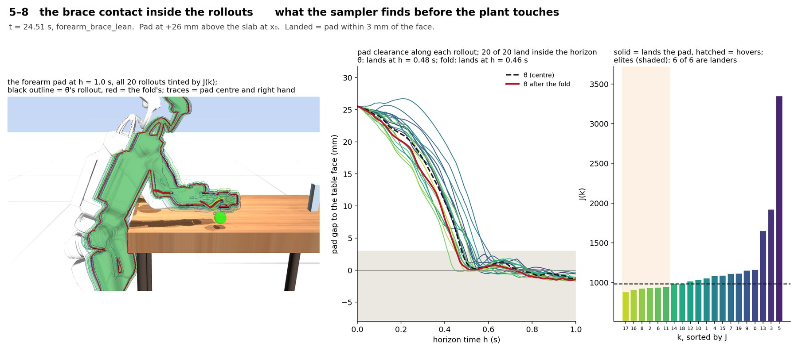</a>
</figure>

<figure>
  <figcaption><span class="eyebrow">line 5</span><strong>the pad landing along the horizon</strong> Detail camera, all 20 rollouts at h = 0.25, 0.5, 0.75, 1.0 s; the frame title counts how many have the pad down by then. 24.51 s.
  <span class="path">figs/cem_stdmin01_s10_dense/t24.51_G2_contact_strip.png · clean/</span></figcaption>
  <a href="media/alg1_filmstrips/cem_stdmin01_s10_dense__t24.51_G2_contact_strip.jpg" target="_blank" rel="noopener">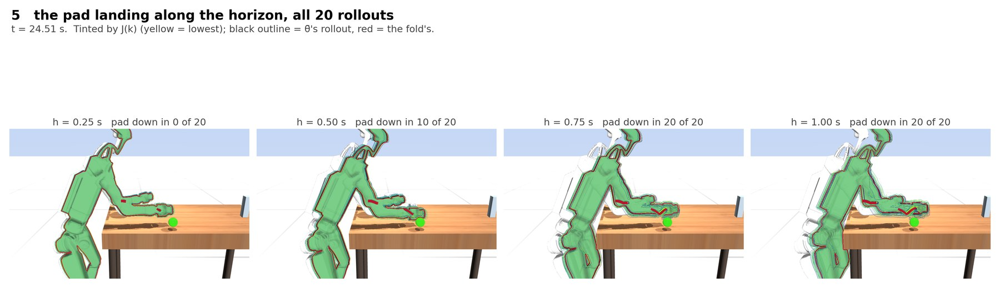</a>
</figure>
<h2 id="s9">Seed 9, t = 24.51 s: nine land, five of the six elites are landers, the centre hovers and the fold lands</h2><p>Pad at +15 mm. θ̄'s own rollout bottoms out at +3 mm and never touches; 9 of 20 samples land (J 1100.8–1289.5, against 1182.2–1300.6 for the 11 hoverers), 5 of the 6 elites are landers,
and the folded plan lands the pad at h = 0.61 s. J(fold) 1168.2 against J(θ̄) 1222.1. Rollout spread at h = 1 s: pelvis 14 / 39 mm, hands 17–28 / 44–73. The plant loads the pad at 24.88 s.</p>

<figure>
  <figcaption><span class="eyebrow">lines 5–8</span><strong>the brace contact inside the rollouts</strong> Detail camera on the forearm pad at h = 1 s with pad and right-hand traces; pad clearance to the table face along every rollout (grey band = landed); J(k) bars with landers solid and hoverers hatched, elites shaded. 
  <span class="path">figs/cem_stdmin01_s9_dense/t24.5_G1_contact.png · clean/</span></figcaption>
  <a href="media/alg1_filmstrips/cem_stdmin01_s9_dense__t24.5_G1_contact.jpg" target="_blank" rel="noopener">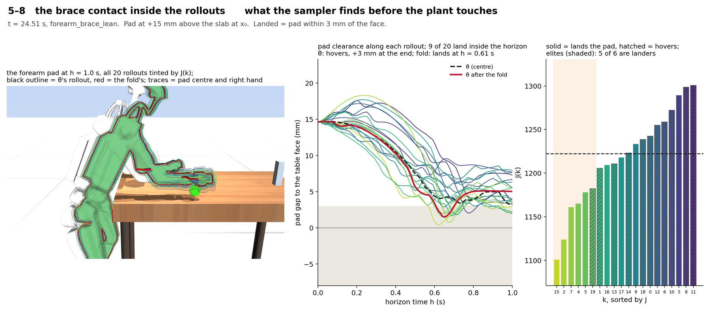</a>
</figure>

<figure>
  <figcaption><span class="eyebrow">line 5</span><strong>the pad landing along the horizon</strong> Detail camera, all 20 rollouts at h = 0.25, 0.5, 0.75, 1.0 s; the frame title counts how many have the pad down by then. 
  <span class="path">figs/cem_stdmin01_s9_dense/t24.5_G2_contact_strip.png · clean/</span></figcaption>
  <a href="media/alg1_filmstrips/cem_stdmin01_s9_dense__t24.5_G2_contact_strip.jpg" target="_blank" rel="noopener">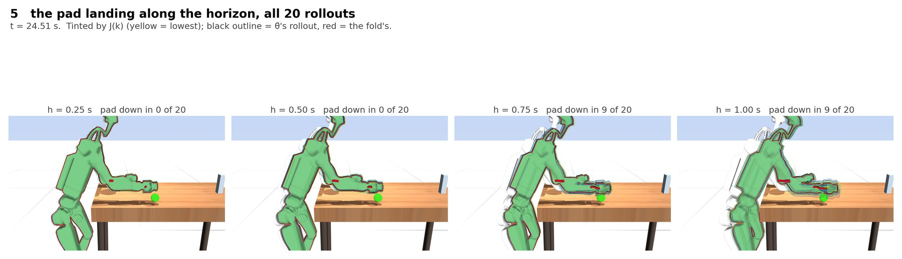</a>
</figure>

<figure>
  <figcaption><span class="eyebrow">line 1</span><strong>θ̄ ← Center(θ)</strong> Six frames of θ̄&#x27;s rollout over the 1 s horizon (faint grey = x₀), its running cost, and the spline θ̄ itself for eight joints. 
  <span class="path">figs/cem_stdmin01_s9_dense/t24.5_A_center.png · clean/</span></figcaption>
  <a href="media/alg1_filmstrips/cem_stdmin01_s9_dense__t24.5_A_center.jpg" target="_blank" rel="noopener">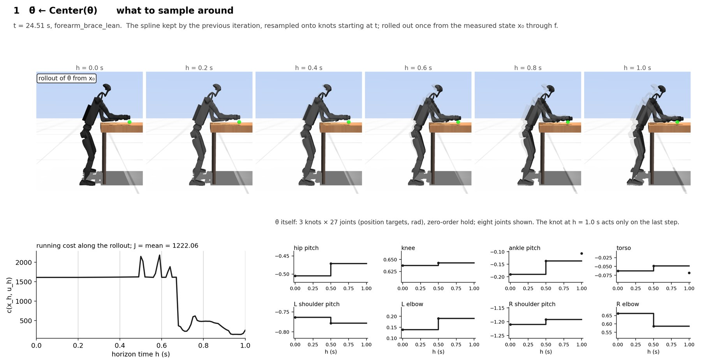</a>
</figure>

<figure>
  <figcaption><span class="eyebrow">lines 3–4</span><strong>ε(k) ~ N(0, Σ), θ(k) ← θ̄ + ε(k)</strong> Σ as a 3 knots × 27 joints heatmap of the std sampled at this tick (refit elite std, floored at std_min), and the 20 perturbed splines around θ̄. 
  <span class="path">figs/cem_stdmin01_s9_dense/t24.5_B_spread.png · clean/</span></figcaption>
  <a href="media/alg1_filmstrips/cem_stdmin01_s9_dense__t24.5_B_spread.jpg" target="_blank" rel="noopener">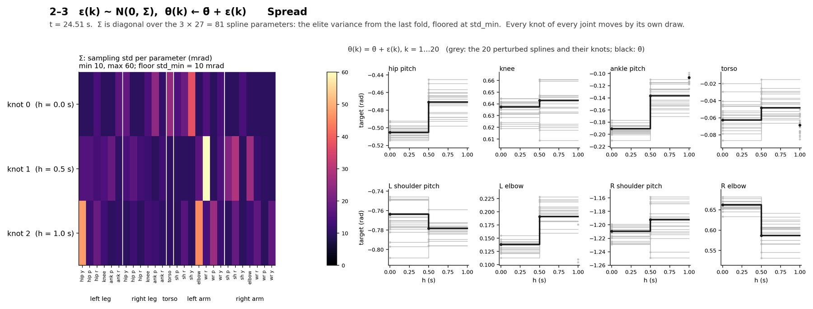</a>
</figure>

<figure>
  <figcaption><span class="eyebrow">line 5</span><strong>roll out f from x₀, all 20 at once</strong> The fan as a filmstrip: every rollout at h = 0.25, 0.5, 0.75, 1.0 s, tinted by J(k) (yellow = lowest); black = θ̄&#x27;s rollout; traces = hands and pelvis. 
  <span class="path">figs/cem_stdmin01_s9_dense/t24.5_C3_fan_strip.png · clean/</span></figcaption>
  <a href="media/alg1_filmstrips/cem_stdmin01_s9_dense__t24.5_C3_fan_strip.jpg" target="_blank" rel="noopener">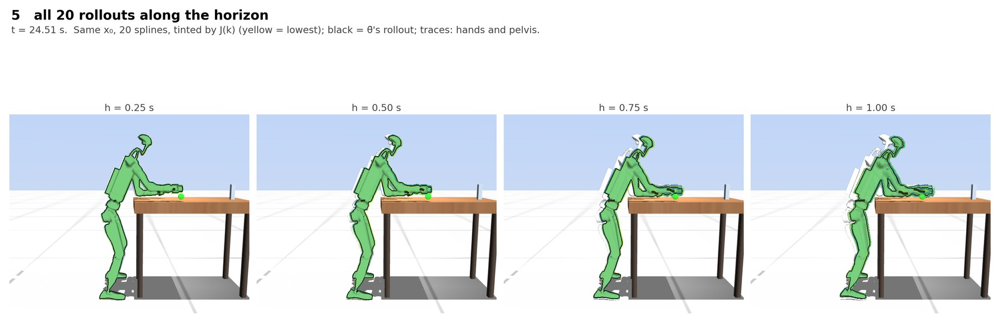</a>
</figure>

<figure>
  <figcaption><span class="eyebrow">lines 5–6</span><strong>J(k) ← mean cost</strong> All 20 end states on one image next to the sorted J(k) bars. 
  <span class="path">figs/cem_stdmin01_s9_dense/t24.5_C1_rollouts_fan.png · clean/</span></figcaption>
  <a href="media/alg1_filmstrips/cem_stdmin01_s9_dense__t24.5_C1_rollouts_fan.jpg" target="_blank" rel="noopener">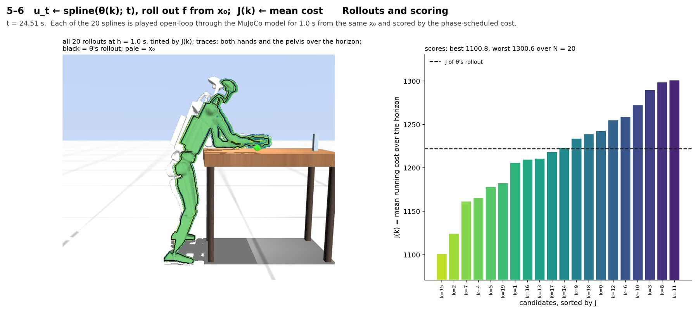</a>
</figure>

<figure>
  <figcaption><span class="eyebrow">lines 5–6</span><strong>four rollouts, frame by frame</strong> Best, two mid-ranked and worst candidate as filmstrips with their running cost against θ̄&#x27;s. 
  <span class="path">figs/cem_stdmin01_s9_dense/t24.5_C2_rollouts_strips.png · clean/</span></figcaption>
  <a href="media/alg1_filmstrips/cem_stdmin01_s9_dense__t24.5_C2_rollouts_strips.jpg" target="_blank" rel="noopener">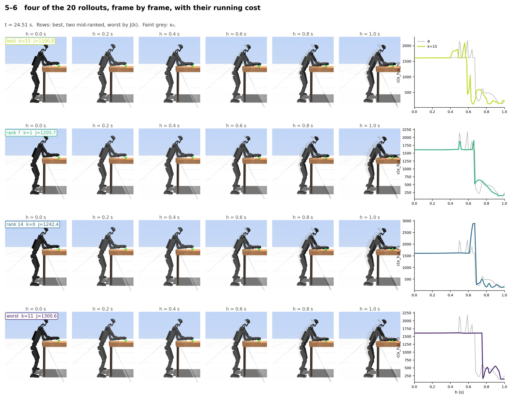</a>
</figure>

<figure>
  <figcaption><span class="eyebrow">line 8</span><strong>θ ← Fold({θ(k)}, {J(k)})</strong> The 6 elites in the J bars, the elite fan with the rollout of their mean (red outline), and the elite splines → mean for eight joints. 
  <span class="path">figs/cem_stdmin01_s9_dense/t24.5_D_fold.png · clean/</span></figcaption>
  <a href="media/alg1_filmstrips/cem_stdmin01_s9_dense__t24.5_D_fold.jpg" target="_blank" rel="noopener">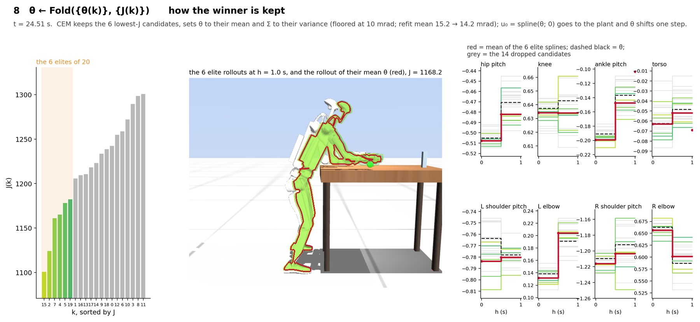</a>
</figure>

<figure>
  <figcaption><span class="eyebrow">line 8</span><strong>θ̄&#x27;s rollout over θ&#x27;s rollout</strong> Both from the same x₀; the difference is one iteration. 
  <span class="path">figs/cem_stdmin01_s9_dense/t24.5_D2_fold_strips.png · clean/</span></figcaption>
  <a href="media/alg1_filmstrips/cem_stdmin01_s9_dense__t24.5_D2_fold_strips.jpg" target="_blank" rel="noopener">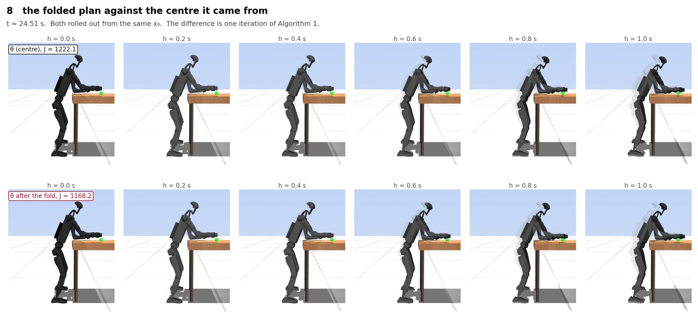</a>
</figure>

<figure>
  <figcaption><span class="eyebrow">all</span><strong>the four stages on one panel</strong> Centre, spread, fan, fold. 
  <span class="path">figs/cem_stdmin01_s9_dense/t24.5_E_overview.png · clean/</span></figcaption>
  <a href="media/alg1_filmstrips/cem_stdmin01_s9_dense__t24.5_E_overview.jpg" target="_blank" rel="noopener">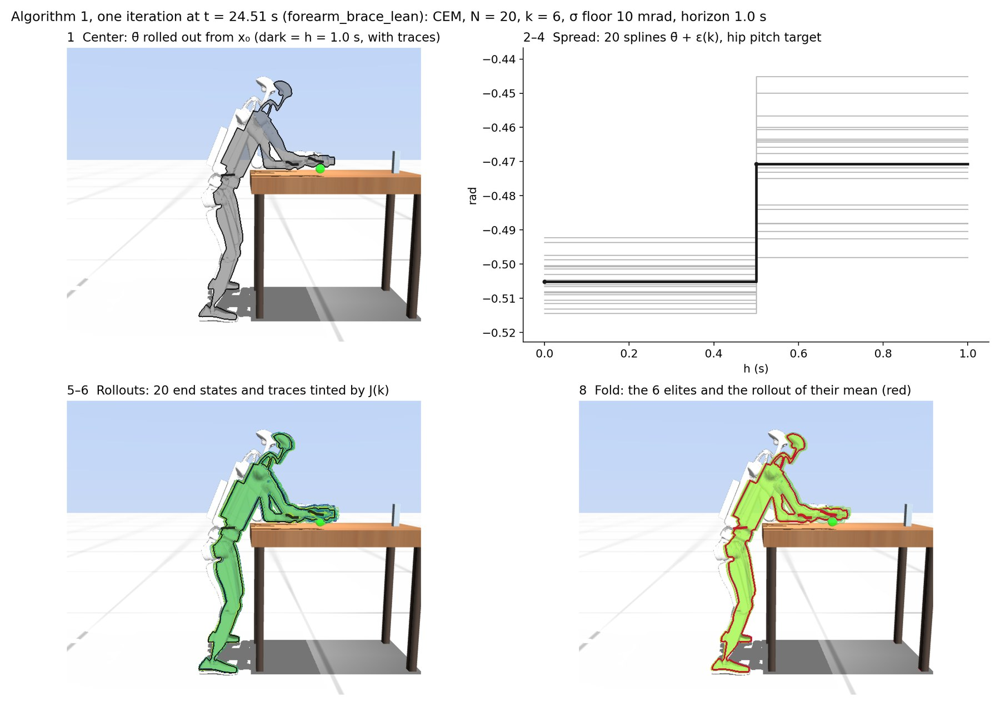</a>
</figure>
<h2 id="extra">Seed 1 at the rung transition, and the std_min 0.02 run finding the contact early</h2>

<figure>
  <figcaption><span class="eyebrow">lines 5–8</span><strong>the brace contact inside the rollouts</strong> Detail camera on the forearm pad at h = 1 s with pad and right-hand traces; pad clearance to the table face along every rollout (grey band = landed); J(k) bars with landers solid and hoverers hatched, elites shaded. Seed 1, t = 24.00 s, the tick on the rung-2 transition: 19 of 20 land at h ≈ 0.8 s; the one hoverer is the worst (J 1247 against 983–1223); the fold lands 70 ms before the centre.
  <span class="path">figs/cem_stdmin01_s1_dense/t24.00_G1_contact.png · clean/</span></figcaption>
  <a href="media/alg1_filmstrips/cem_stdmin01_s1_dense__t24.00_G1_contact.jpg" target="_blank" rel="noopener">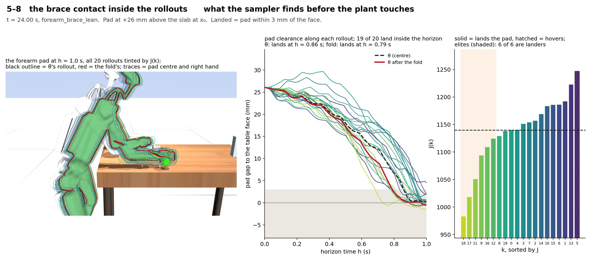</a>
</figure>

<figure>
  <figcaption><span class="eyebrow">lines 5–8</span><strong>the brace contact inside the rollouts</strong> Detail camera on the forearm pad at h = 1 s with pad and right-hand traces; pad clearance to the table face along every rollout (grey band = landed); J(k) bars with landers solid and hoverers hatched, elites shaded. std_min 0.02, seed 0, t = 23.01 s, still in rung 1 with the pad at +43 mm: all 20 rollouts land it at h ≈ 0.6 s and the plant loads it at 23.64 s, 1.5 s before the deployed floor&#x27;s runs.
  <span class="path">figs/cem_stdmin02_s0_dense/t23.01_G1_contact.png · clean/</span></figcaption>
  <a href="media/alg1_filmstrips/cem_stdmin02_s0_dense__t23.01_G1_contact.jpg" target="_blank" rel="noopener">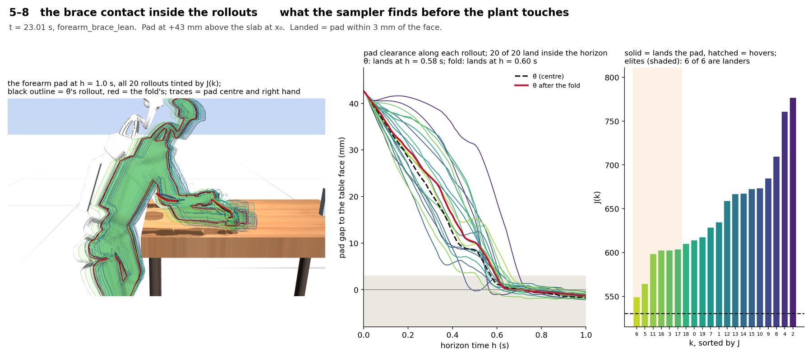</a>
</figure>

<figure>
  <figcaption><span class="eyebrow">line 5</span><strong>the pad landing along the horizon</strong> Detail camera, all 20 rollouts at h = 0.25, 0.5, 0.75, 1.0 s; the frame title counts how many have the pad down by then. The same tick as a strip.
  <span class="path">figs/cem_stdmin02_s0_dense/t23.01_G2_contact_strip.png · clean/</span></figcaption>
  <a href="media/alg1_filmstrips/cem_stdmin02_s0_dense__t23.01_G2_contact_strip.jpg" target="_blank" rel="noopener">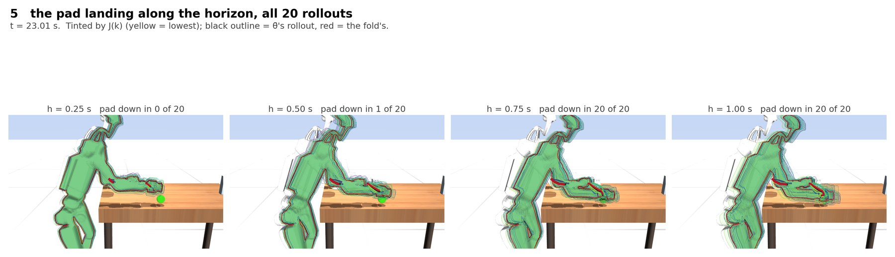</a>
</figure>

<h2 id="notes">What the dumps say about the bench itself, and what to measure next</h2>
<p>Looking for the contact tick exposed a property of the schedule on this plant. In the planner-ablation runs on the deploy plant at 33 plans/s (<code>studies/planner_ablation/runs/gains_spp15</code>),
shipped CEM (std_min 0.01) is scored complete in 10 of 12 seeds, but the forearm carries load in only 3 of those 10 (seeds 1, 9, 10: 117–147 N). The other seven lean to ~20°, hold the pad 10–30 mm above the slab
and walk through the rungs on 12.0 s intervals. The rung's contact gate accepts a believed pad gap under <code>brace_contact_zmargin</code> = 80 mm (<code>lean.cc</code>, "believed pad gap"), so a hovering pad passes the 2 s verify and the schedule advances unbraced.
At std_min 0.02–0.05 every completing seed braces (157–365 N); PS-hold 10/12, MPPI 11/12, iCEM 7/12.</p>
<ul>
<li>Re-score the ablation page with a brace criterion next to completion: <code>f_forearm</code> &gt; 20 N sustained for 1 s inside rungs 1–2 (the column is in every <code>*.csv</code>; <code>analyze.py</code> reads them). Completion and brace are different counts at the deployed floor.</li>
<li>On the robot logs, check whether the measured brace force was loaded before the reach rung fired (the wrist/forearm F/T channel against the phase index). If the real robot also advances on a believed gap, the 80 mm margin is doing on hardware what it does here.</li>
<li>Whether the schedule should ask for the contact in rung 1: the std_min 0.02 run lands it 1.5 s earlier without the rung-2 target. Rerun <code>run_contact_dumps.sh "0.02:0 0.02:1 0.02:2"</code> and count the first-landing tick per seed.</li>
</ul>
</main>